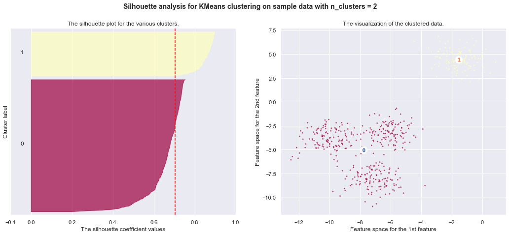

K-Means Clustering
These codes are imported from Scikit-Learn python package for learning purpose
import numpy as np import matplotlib.pyplot as plt import seaborn as sns %matplotlib inline sns.set()
1. K-means Clustering
The plots display firstly what a K-means algorithm would yield
using three clusters. It is then shown what the effect of a bad
initialization is on the classification process:
-
By setting
n_initto only 1 (default is 10), the amount oftimes that the algorithm will be run with different centroid seeds is reduced. -
The next plot displays what using eight clusters would deliver and finally the ground truth.
from mpl_toolkits.mplot3d import Axes3D from sklearn.cluster import KMeans from sklearn import datasets
np.random.seed(5) centers = [[1, 1], [-1, -1], [1, -1]] iris = datasets.load_iris() X = iris.data y = iris.target
estimators = {'k_means_iris_3': KMeans(n_clusters=3), 'k_means_iris_8': KMeans(n_clusters=8), 'k_means_iris_bad_init': KMeans(n_clusters=3, n_init=1, init='random')}
fignum = 1 for name, est in estimators.items(): fig = plt.figure(fignum, figsize=(8, 6)) plt.clf() ax = Axes3D(fig, rect=[0, 0, .95, 1], elev=48, azim=134) plt.cla() est.fit(X) labels = est.labels_ ax.scatter(X[:, 3], X[:, 0], X[:, 2], c=labels.astype(np.float)) ax.w_xaxis.set_ticklabels([]) ax.w_yaxis.set_ticklabels([]) ax.w_zaxis.set_ticklabels([]) ax.set_xlabel('Petal width') ax.set_ylabel('Sepal length') ax.set_zlabel('Petal length') fignum = fignum + 1 # Plot the ground truth fig = plt.figure(fignum, figsize=(8, 6)) plt.clf() ax = Axes3D(fig, rect=[0, 0, .95, 1], elev=48, azim=134) plt.cla() for name, label in [('Setosa', 0), ('Versicolour', 1), ('Virginica', 2)]: ax.text3D(X[y == label, 3].mean(), X[y == label, 0].mean() + 1.5, X[y == label, 2].mean(), name, horizontalalignment='center', bbox=dict(alpha=.5, edgecolor='w', facecolor='w')) # Reorder the labels to have colors matching the cluster results y = np.choose(y, [1, 2, 0]).astype(np.float) ax.scatter(X[:, 3], X[:, 0], X[:, 2], c=y) ax.w_xaxis.set_ticklabels([]) ax.w_yaxis.set_ticklabels([]) ax.w_zaxis.set_ticklabels([]) ax.set_xlabel('Petal width') ax.set_ylabel('Sepal length') ax.set_zlabel('Petal length') plt.show()


2. Demonstration of k-means assumptions
This example is meant to illustrate situations where k-means will produce
unintuitive and possibly unexpected clusters. In the first three plots, the
input data does not conform to some implicit assumption that k-means makes and
undesirable clusters are produced as a result. In the last plot, k-means
returns intuitive clusters despite unevenly sized blobs.
from sklearn.cluster import KMeans from sklearn.datasets import make_blobs
#### Model and Plot
plt.figure(figsize=(15, 12)) n_samples = 1500 random_state = 170 X, y = make_blobs(n_samples=n_samples, random_state=random_state) # Incorrect number of clusters y_pred = KMeans(n_clusters=2, random_state=random_state).fit_predict(X) plt.subplot(221) plt.scatter(X[:, 0], X[:, 1], c=y_pred) plt.title("Incorrect Number of Blobs") # Anisotropicly distributed data transformation = [[ 0.60834549, -0.63667341], [-0.40887718, 0.85253229]] X_aniso = np.dot(X, transformation) y_pred = KMeans(n_clusters=3, random_state=random_state).fit_predict(X_aniso) plt.subplot(222) plt.scatter(X_aniso[:, 0], X_aniso[:, 1], c=y_pred) plt.title("Anisotropicly Distributed Blobs") # Different variance X_varied, y_varied = make_blobs(n_samples=n_samples, cluster_std=[1.0, 2.5, 0.5], random_state=random_state) y_pred = KMeans(n_clusters=3, random_state=random_state).fit_predict(X_varied) plt.subplot(223) plt.scatter(X_varied[:, 0], X_varied[:, 1], c=y_pred) plt.title("Unequal Variance") # Unevenly sized blobs X_filtered = np.vstack((X[y == 0][:500], X[y == 1][:100], X[y == 2][:10])) y_pred = KMeans(n_clusters=3, random_state=random_state).fit_predict(X_filtered) plt.subplot(224) plt.scatter(X_filtered[:, 0], X_filtered[:, 1], c=y_pred) plt.title("Unevenly Sized Blobs") plt.show()
3. A demo of K-Means clustering on the handwritten digits data
In this example we compare the various initialization strategies for
K-means in terms of runtime and quality of the results.
As the ground truth is known here, we also apply different cluster quality metrics to judge the goodness of fit of the cluster labels to the ground truth.
Cluster quality metrics evaluated (see :ref:clustering_evaluation for
definitions and discussions of the metrics):
homo homogeneity score compl completeness score v-meas V measure ARI adjusted Rand index AMI adjusted mutual information silhouette silhouette coefficient
from time import time from sklearn import metrics from sklearn.cluster import KMeans from sklearn.datasets import load_digits from sklearn.decomposition import PCA from sklearn.preprocessing import scale
#### Data
np.random.seed(42) digits = load_digits() data = scale(digits.data) n_samples, n_features = data.shape n_digits = len(np.unique(digits.target)) labels = digits.target sample_size = 300 print("n_digits: %d, \t n_samples %d, \t n_features %d" % (n_digits, n_samples, n_features)) print(79 * '_') print('% 9s' % 'init' ' time inertia homo compl v-meas ARI AMI silhouette')
n_digits: 10, n_samples 1797, n_features 64 _______________________________________________________________________________ init time inertia homo compl v-meas ARI AMI silhouette
#### Model
def bench_k_means(estimator, name, data): t0 = time() estimator.fit(data) print('% 9s %.2fs %i %.3f %.3f %.3f %.3f %.3f %.3f' % (name, (time() - t0), estimator.inertia_, metrics.homogeneity_score(labels, estimator.labels_), metrics.completeness_score(labels, estimator.labels_), metrics.v_measure_score(labels, estimator.labels_), metrics.adjusted_rand_score(labels, estimator.labels_), metrics.adjusted_mutual_info_score(labels, estimator.labels_), metrics.silhouette_score(data, estimator.labels_, metric='euclidean', sample_size=sample_size))) bench_k_means(KMeans(init='k-means++', n_clusters=n_digits, n_init=10), name="k-means++", data=data) bench_k_means(KMeans(init='random', n_clusters=n_digits, n_init=10), name="random", data=data)
k-means++ 0.27s 69510 0.610 0.657 0.633 0.481 0.629 0.129 random 0.24s 69907 0.633 0.674 0.653 0.518 0.649 0.131
# in this case the seeding of the centers is deterministic, hence we run the # kmeans algorithm only once with n_init=1 pca = PCA(n_components=n_digits).fit(data) bench_k_means(KMeans(init=pca.components_, n_clusters=n_digits, n_init=1), name="PCA-based", data=data) print(79 * '_')
PCA-based 0.04s 70768 0.668 0.695 0.681 0.558 0.678 0.142 _______________________________________________________________________________
#### Plot
# Visualize the results on PCA-reduced data reduced_data = PCA(n_components=2).fit_transform(data) kmeans = KMeans(init='k-means++', n_clusters=n_digits, n_init=10) kmeans.fit(reduced_data) # Step size of the mesh. Decrease to increase the quality of the VQ. h = .02 # point in the mesh [x_min, m_max]x[y_min, y_max]. # Plot the decision boundary. For that, we will assign a color to each x_min, x_max = reduced_data[:, 0].min() - 1, reduced_data[:, 0].max() + 1 y_min, y_max = reduced_data[:, 1].min() - 1, reduced_data[:, 1].max() + 1 xx, yy = np.meshgrid(np.arange(x_min, x_max, h), np.arange(y_min, y_max, h)) # Obtain labels for each point in mesh. Use last trained model. Z = kmeans.predict(np.c_[xx.ravel(), yy.ravel()]) # Put the result into a color plot Z = Z.reshape(xx.shape) plt.figure(figsize = [10,8]) plt.clf() plt.imshow(Z, interpolation='nearest', extent=(xx.min(), xx.max(), yy.min(), yy.max()), cmap=plt.cm.Paired, aspect='auto', origin='lower') plt.plot(reduced_data[:, 0], reduced_data[:, 1], 'k.', markersize=2) # Plot the centroids as a white X centroids = kmeans.cluster_centers_ plt.scatter(centroids[:, 0], centroids[:, 1], marker='x', s=169, linewidths=3, color='w', zorder=10) plt.title('K-means clustering on the digits dataset (PCA-reduced data)\n' 'Centroids are marked with white cross') plt.xlim(x_min, x_max) plt.ylim(y_min, y_max) plt.xticks(()) plt.yticks(()) plt.show()

7. Selecting the number of clusters with silhouette analysis on KMeans clustering
Silhouette analysis can be used to study the separation distance between the resulting clusters. The silhouette plot displays a measure of how close each point in one cluster is to points in the neighboring clusters and thus provides a way to assess parameters like number of clusters visually. This measure has a range of [-1, 1].
Silhouette coefficients (as these values are referred to as) near +1 indicate that the sample is far away from the neighboring clusters. A value of 0 indicates that the sample is on or very close to the decision boundary between two neighboring clusters and negative values indicate that those samples might have been assigned to the wrong cluster.
In this example the silhouette analysis is used to choose an optimal value for
n_clusters. The silhouette plot shows that the n_clusters value of 3, 5
and 6 are a bad pick for the given data due to the presence of clusters with
below average silhouette scores and also due to wide fluctuations in the size
of the silhouette plots. Silhouette analysis is more ambivalent in deciding
between 2 and 4.
Also from the thickness of the silhouette plot the cluster size can be
visualized. The silhouette plot for cluster 0 when n_clusters is equal to
2, is bigger in size owing to the grouping of the 3 sub clusters into one big
cluster. However when the n_clusters is equal to 4, all the plots are more
or less of similar thickness and hence are of similar sizes as can be also
verified from the labelled scatter plot on the right.
from __future__ import print_function from sklearn.datasets import make_blobs from sklearn.cluster import KMeans from sklearn.metrics import silhouette_samples, silhouette_score import matplotlib.cm as cm
# Generating the sample data from make_blobs # This particular setting has one distinct cluster and 3 clusters placed close # together. X, y = make_blobs(n_samples=500, n_features=2, centers=4, cluster_std=1, center_box=(-10.0, 10.0), shuffle=True, random_state=1) # For reproducibility range_n_clusters = [2, 3, 4, 5, 6]
cmap = cm.get_cmap("Spectral")
for n_clusters in range_n_clusters: # Create a subplot with 1 row and 2 columns fig, (ax1, ax2) = plt.subplots(1, 2) fig.set_size_inches(18, 7) # The 1st subplot is the silhouette plot # The silhouette coefficient can range from -1, 1 but in this example all # lie within [-0.1, 1] ax1.set_xlim([-0.1, 1]) # The (n_clusters+1)*10 is for inserting blank space between silhouette # plots of individual clusters, to demarcate them clearly. ax1.set_ylim([0, len(X) + (n_clusters + 1) * 10]) # Initialize the clusterer with n_clusters value and a random generator # seed of 10 for reproducibility. clusterer = KMeans(n_clusters=n_clusters, random_state=10) cluster_labels = clusterer.fit_predict(X) # The silhouette_score gives the average value for all the samples. # This gives a perspective into the density and separation of the formed # clusters silhouette_avg = silhouette_score(X, cluster_labels) print("For n_clusters =", n_clusters, "The average silhouette_score is :", silhouette_avg) # Compute the silhouette scores for each sample sample_silhouette_values = silhouette_samples(X, cluster_labels) y_lower = 10 for i in range(n_clusters): # Aggregate the silhouette scores for samples belonging to # cluster i, and sort them ith_cluster_silhouette_values = \ sample_silhouette_values[cluster_labels == i] ith_cluster_silhouette_values.sort() size_cluster_i = ith_cluster_silhouette_values.shape[0] y_upper = y_lower + size_cluster_i color = cmap(float(i) / n_clusters) ax1.fill_betweenx(np.arange(y_lower, y_upper), 0, ith_cluster_silhouette_values, facecolor=color, edgecolor=color, alpha=0.7) # Label the silhouette plots with their cluster numbers at the middle ax1.text(-0.05, y_lower + 0.5 * size_cluster_i, str(i)) # Compute the new y_lower for next plot y_lower = y_upper + 10 # 10 for the 0 samples ax1.set_title("The silhouette plot for the various clusters.") ax1.set_xlabel("The silhouette coefficient values") ax1.set_ylabel("Cluster label") # The vertical line for average silhouette score of all the values ax1.axvline(x=silhouette_avg, color="red", linestyle="--") ax1.set_yticks([]) # Clear the yaxis labels / ticks ax1.set_xticks([-0.1, 0, 0.2, 0.4, 0.6, 0.8, 1]) # 2nd Plot showing the actual clusters formed colors = cmap(cluster_labels.astype(float) / n_clusters) ax2.scatter(X[:, 0], X[:, 1], marker='.', s=30, lw=0, alpha=0.7, c=colors) # Labeling the clusters centers = clusterer.cluster_centers_ # Draw white circles at cluster centers ax2.scatter(centers[:, 0], centers[:, 1], marker='o', c="white", alpha=1, s=200) for i, c in enumerate(centers): ax2.scatter(c[0], c[1], marker='$%d$' % i, alpha=1, s=50) ax2.set_title("The visualization of the clustered data.") ax2.set_xlabel("Feature space for the 1st feature") ax2.set_ylabel("Feature space for the 2nd feature") plt.suptitle(("Silhouette analysis for KMeans clustering on sample data " "with n_clusters = %d" % n_clusters), fontsize=14, fontweight='bold') plt.show()
For n_clusters = 2 The average silhouette_score is : 0.7049787496083261

For n_clusters = 3 The average silhouette_score is : 0.5882004012129721
For n_clusters = 4 The average silhouette_score is : 0.6505186632729437

For n_clusters = 5 The average silhouette_score is : 0.5745566973301872
For n_clusters = 6 The average silhouette_score is : 0.4390271118313242
8. Empirical evaluation of the impact of k-means initialization
Evaluate the ability of k-means initializations strategies to make the algorithm convergence robust as measured by the relative standard deviation of the inertia of the clustering (i.e. the sum of distances to the nearest cluster center).
The first plot shows the best inertia reached for each combination
of the model (KMeans or MiniBatchKMeans) and the init method
(init="random" or init="kmeans++") for increasing values of the
n_init parameter that controls the number of initializations.
The second plot demonstrate one single run of the MiniBatchKMeans
estimator using a init="random" and n_init=1. This run leads to
a bad convergence (local optimum) with estimated centers stuck
between ground truth clusters.
The dataset used for evaluation is a 2D grid of isotropic Gaussian clusters widely spaced.
- Author: Olivier Grisel olivier.grisel@ensta.org
- License: BSD 3 clause
import matplotlib.cm as cm from sklearn.utils import shuffle from sklearn.utils import check_random_state from sklearn.cluster import MiniBatchKMeans from sklearn.cluster import KMeans
random_state = np.random.RandomState(0) # Number of run (with randomly generated dataset) for each strategy so as # to be able to compute an estimate of the standard deviation n_runs = 5 # k-means models can do several random inits so as to be able to trade # CPU time for convergence robustness n_init_range = np.array([1, 5, 10, 15, 20]) # Datasets generation parameters n_samples_per_center = 100 grid_size = 3 scale = 0.1 n_clusters = grid_size ** 2
def make_data(random_state, n_samples_per_center, grid_size, scale): random_state = check_random_state(random_state) centers = np.array([[i, j] for i in range(grid_size) for j in range(grid_size)]) n_clusters_true, n_features = centers.shape noise = random_state.normal( scale=scale, size=(n_samples_per_center, centers.shape[1])) X = np.concatenate([c + noise for c in centers]) y = np.concatenate([[i] * n_samples_per_center for i in range(n_clusters_true)]) return shuffle(X, y, random_state=random_state)
# Part 1: Quantitative evaluation of various init methods fig = plt.figure(figsize = [12,10]) plots = [] legends = [] cases = [ (KMeans, 'k-means++', {}), (KMeans, 'random', {}), (MiniBatchKMeans, 'k-means++', {'max_no_improvement': 3}), (MiniBatchKMeans, 'random', {'max_no_improvement': 3, 'init_size': 500}), ] for factory, init, params in cases: print("Evaluation of %s with %s init" % (factory.__name__, init)) inertia = np.empty((len(n_init_range), n_runs)) for run_id in range(n_runs): X, y = make_data(run_id, n_samples_per_center, grid_size, scale) for i, n_init in enumerate(n_init_range): km = factory(n_clusters=n_clusters, init=init, random_state=run_id, n_init=n_init, **params).fit(X) inertia[i, run_id] = km.inertia_ p = plt.errorbar(n_init_range, inertia.mean(axis=1), inertia.std(axis=1)) plots.append(p[0]) legends.append("%s with %s init" % (factory.__name__, init)) plt.xlabel('n_init') plt.ylabel('inertia') plt.legend(plots, legends) plt.title("Mean inertia for various k-means init across %d runs" % n_runs) # Part 2: Qualitative visual inspection of the convergence X, y = make_data(random_state, n_samples_per_center, grid_size, scale) km = MiniBatchKMeans(n_clusters=n_clusters, init='random', n_init=1, random_state=random_state).fit(X) fig = plt.figure(figsize = [12,10]) for k in range(n_clusters): my_members = km.labels_ == k cmap = cm.get_cmap("Spectral") color = cmap(float(k) / n_clusters, 1) plt.plot(X[my_members, 0], X[my_members, 1], 'o', marker='.', c=color) cluster_center = km.cluster_centers_[k] plt.plot(cluster_center[0], cluster_center[1], 'o', markerfacecolor=color, markeredgecolor='k', markersize=6) plt.title("Example cluster allocation with a single random init\n" "with MiniBatchKMeans") plt.show()
Evaluation of KMeans with k-means++ init Evaluation of KMeans with random init Evaluation of MiniBatchKMeans with k-means++ init Evaluation of MiniBatchKMeans with random init